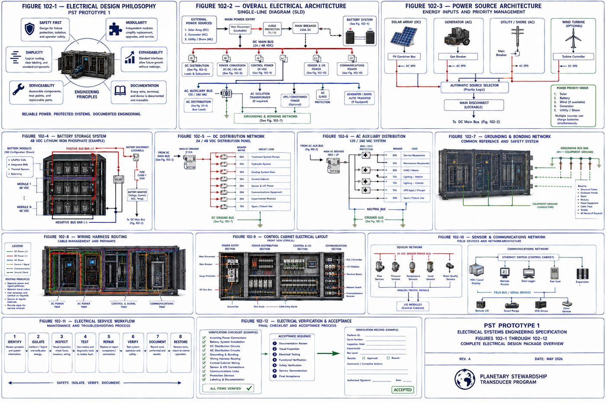
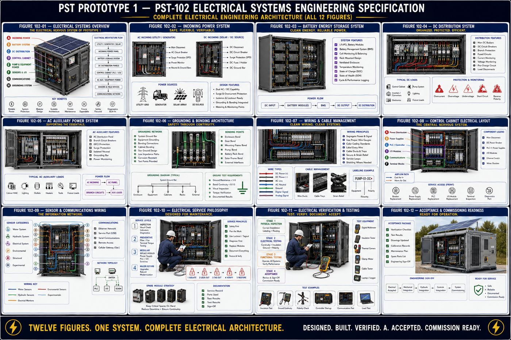

Part of an Eight-Volume Set
This is the second of eight detailed volume pages expanding on [[planetary-stewardship-transducer]] (AW-04). PST-102 builds directly on the mechanical architecture in [[pst-101-mechanical-systems]] (AW-10): the mechanical interfaces, module boundaries, service clearances, and maintenance philosophy established there remain unchanged. PST-102 defines how electrical energy moves through the machine PST-101 built, without altering its physical architecture.
PST-102 defines the complete electrical architecture of Prototype 1: the design philosophy and seven-layer hierarchy that organizes every electrical decision, the incoming power gateway that accepts multiple energy sources, the battery storage system that stabilizes operation, the DC and AC distribution networks that deliver energy to every subsystem, the grounding and bonding architecture that protects personnel and equipment, the wiring harness standard that organizes every conductor, the control cabinet that centralizes automation hardware, the sensor and communications wiring that gives the platform its senses, the service philosophy governing electrical maintenance, and the verification and acceptance program required before the electrical system enters service.
All twelve chapters are covered in full below, following the specification's own structure: purpose, engineering intent, philosophy, architecture, and a chapter summary.
I. Electrical Design Philosophy
The electrical architecture is designed to provide dependable energy distribution throughout the platform while maintaining a clear separation between power generation, power conversion, control electronics, sensing, communications, and future expansion, defined independently of control algorithms, experimental modules, or environmental operating strategies.
1.1 Six Electrical Design Principles
| Principle | Core Commitment |
|---|---|
| 1 — Safety | The highest priority. A lockable main disconnect, equipment grounding, bonding, overcurrent and surge protection, hazard labeling, and emergency shutdown, so no maintenance activity exposes personnel to energized conductors without proper isolation |
| 2 — Modularity | Electrical assemblies organized into independent modules, incoming power, battery, DC and AC distribution, control cabinet, communications, and sensor interfaces, removable without rewiring unrelated systems |
| 3 — Simplicity | Straightforward, easy-to-understand routing through dedicated wireways, standard connector families, organized bundles, and consistent wire numbering |
| 4 — Expandability | Reserve provisions for additional sensors, expanded communications, additional treatment modules, and future automation, added through standardized interfaces rather than redesign |
| 5 — Serviceability | Accessible terminals, clearly labeled conductors, replaceable harnesses, modular protection devices, and integrated test points, to minimize downtime |
| 6 — Documentation | Every conductor, terminal, connector, fuse, breaker, and grounding point identified, with configuration records that accurately reflect the physical installation throughout the platform's life |
1.2 The Seven-Layer Electrical Hierarchy
The architecture organizes into seven functional layers: energy sources, external inputs such as solar photovoltaic arrays, utility connection, or a portable generator; energy storage, the battery systems that stabilize and store energy for uninterrupted operation; power conversion, the equipment that conditions incoming energy and distributes appropriate voltages; distribution, the protected AC and DC systems supplying every subsystem; control power, conditioned power dedicated to controllers, instrumentation, communications, and operator interfaces; field devices, sensors, actuators, pumps, valves, and indicators; and communications, the networking hardware supporting local monitoring, diagnostics, and future remote connectivity. The architecture is intended to remain useful through multiple generations of technological advancement, with new technologies integrating through the standardized interfaces this specification establishes rather than requiring wholesale replacement.
II. Overall Electrical Architecture
Rather than examining individual components first, the platform is viewed as an integrated electrical organism in which energy flows through organized layers, external energy, power entry, energy storage, power conversion, distribution, control, and finally field equipment, establishing the electrical road map every subsequent subsystem follows.
2.1 The Seven Electrical Zones
| Zone | Function |
|---|---|
| A — Incoming Power Bay | Solar, utility, and generator input, main disconnect, and surge protection; the first point of entry, with no downstream equipment energized until power passes through this section |
| B — Energy Storage Bay | Battery modules, battery disconnect, monitoring electronics, protection devices, and state-of-charge monitoring; stabilizes system operation and provides power continuity |
| C — Power Conversion Bay | DC/DC converters, AC/DC chargers, the DC/AC inverter where installed, and voltage regulation, converting incoming energy into the voltages the platform requires |
| D — Distribution Bay | DC bus bars, the AC distribution panel, circuit breakers, fuses, and branch circuits; every electrical load originates here |
| E — Control Power Bay | Conditioned power for the PLC/controller, HMI, data logger, communications, and diagnostics, electrically protected from high-current equipment |
| F — Field Equipment Network | Pumps, solenoid valves, fans, lighting, sensors, and experimental hardware; the final destination of distributed electrical energy |
| G — Communications Network | Ethernet, local service ports, data acquisition, and expansion interfaces, remaining electrically isolated from power distribution wherever practical |
Energy is expected to follow a logical progression: it enters, is protected, is conditioned, is stored, is distributed, performs work, and its resulting system health is monitored and reported back to the controller, a closed engineering loop supporting reliable long-term operation. Prototype 1 intentionally separates electrical functions into independent compartments, high-current power from instrumentation, battery systems from communications hardware, power conversion from sensor wiring, and experimental equipment from baseline systems, reducing electrical noise and improving safety.
The platform employs independent electrical buses for distinct engineering functions: a main DC bus for primary energy distribution, an auxiliary DC bus for control electronics, an AC auxiliary bus for lighting and convenience outlets, a communications bus for digital pathways, and a grounding network serving as the common electrical reference for personnel safety and equipment bonding. Where practical, critical functions tolerate the loss of a single non-structural component without requiring complete shutdown, through independent branch protection, replaceable battery modules, and separate control power, with redundancy introduced thoughtfully rather than by default. The architecture reserves capacity for future sensor arrays, treatment modules, battery capacity, and communications hardware, and every electrical routing decision is made to complement rather than compromise the mechanical service paths, module removal clearances, cooling airflow, and structural inspection access established in PST-101.
III. Incoming Power and Energy Sources
Prototype 1 is designed to support multiple energy sources while maintaining a common internal electrical architecture: regardless of source, all incoming power passes through standardized protection, isolation, and distribution before energizing downstream equipment, creating a platform capable of operating in laboratory, field, industrial, and remote environments without fundamental changes to the electrical infrastructure.
| Source | Role |
|---|---|
| A — Solar Photovoltaic | The primary renewable source, for daytime operation, battery charging, and supplemental power, interfacing through standardized DC inputs |
| B — Utility Power | Laboratory or permanent installation supply, for continuous operation, battery charging, and commissioning and maintenance support, isolated through the main protection assembly |
| C — Portable Generator | Temporary field power for remote deployments, emergency operation, and backup during maintenance, held to the same protection standards as utility power |
| D — Future Energy Interfaces | Reserved standardized interfaces for wind generation, micro-hydroelectric systems, fuel cells, or other future renewable technologies |
The Incoming Power Bay is the electrical gateway to the platform, main disconnect, lockout provisions, surge protection, a source selector, input monitoring, and a grounding interface, with no downstream subsystem receiving power without passing through this compartment. When multiple sources are available, a defined priority applies, typically solar generation when sufficient, then battery-supported operation, then utility power, then a portable generator, configurable to deployment objectives, with the architecture designed to prevent unintended backfeeding between independent sources. Incoming energy is conditioned through voltage regulation, surge suppression, and transient filtering before distribution, and protected at the point of entry through a main circuit breaker, surge protective devices, input fusing, a disconnect switch, and reverse-polarity protection for DC sources. Every incoming source establishes appropriate grounding and bonding before energizing the internal system, and source availability is continuously monitored, input voltage, current, frequency for AC sources, and protective device condition, supporting diagnostics without directly controlling source selection.
IV. Battery Storage System Engineering
The Battery Storage System stabilizes incoming energy, maintains uninterrupted operation during temporary power interruptions, supports autonomous field deployments, and provides a predictable electrical foundation for every downstream subsystem, designed as a modular, serviceable, and expandable assembly. Prototype 1 treats the battery system as a removable energy module rather than a permanent installation, simplifying replacement and testing, easing transportation, and supporting future chemistry upgrades: the platform is designed around the battery module, not around a specific battery chemistry.
The Battery Storage Bay consists of a structural battery rack, modular battery trays, a main battery disconnect, protection devices, bus bar assemblies, monitoring interfaces, cooling provisions, and service access, providing a standardized mechanical and electrical environment for interchangeable battery modules. Each module mounts within a removable tray supporting secure positioning, mechanical protection, guided installation, and independent servicing, replaceable without disturbing adjacent assemblies wherever practical. A Battery Management System continuously monitors cell voltage, module voltage, charge state, temperature, current flow, and state of health, providing protective function alongside traceable operating records. Energy leaves the system through dedicated positive and negative DC bus bars with protective isolation and standardized connection points, and each battery assembly incorporates overcurrent and short-circuit protection, disconnect capability, and fault monitoring. Battery thermal management integrates with the overall cooling architecture established in PST-101, and routine maintenance, visual and terminal inspection, BMS diagnostics, and connection verification, is designed around modular tray removal rather than individual cell servicing in the field. The system reserves provisions for additional trays, increased capacity, and alternative chemistries, engineered so battery technology can evolve while mechanical interfaces, electrical interfaces, and service procedures remain constant: the architecture is intended to outlive the individual battery technology it currently houses.
V. DC Distribution Network Engineering
The DC Distribution Network delivers conditioned direct current from the Battery Storage System and Power Conversion System to every major subsystem, functioning as the electrical circulatory system of the platform. Prototype 1 adopts a centralized distribution architecture: rather than routing individual conductors directly from the battery to every load, power is first delivered to a common distribution assembly where protection, isolation, monitoring, and branching occur, reducing wiring complexity while improving serviceability. The Main DC Bus is the central energy artery, receiving conditioned energy from storage and supplying protected branch circuits with monitoring access and standardized voltage distribution.
5.1 Eight Branch Circuits
| Branch | Supplies |
|---|---|
| A — Pump Module | The primary circulation pump and associated motor control equipment |
| B — Hydraulic System | Valves, actuators, and auxiliary hydraulic devices |
| C — Cooling System | Ventilation fans and thermal management hardware |
| D — Control Power | The conditioned control-power system described in later chapters |
| E — Sensor Network | Field instrumentation and environmental sensors |
| F — Communications | Networking equipment and data communication hardware |
| G — Lighting & Service Circuits | Interior lighting, maintenance receptacles, and service functions |
| H — Experimental Module | Approved research hardware, electrically isolated from validated operational systems through dedicated protection and monitoring |
Every branch carries independent protection, circuit breakers, fuses, or electronic current limiting, so a fault in one branch does not unnecessarily interrupt unrelated functions. Bus bars prioritize low electrical resistance, mechanical rigidity, and accessible inspection, remaining physically separated from low-voltage control wiring, and conductor sizing accounts for length, current demand, temperature, and future expansion to minimize voltage drop. High-current conductors stay physically separated from sensor wiring, communications cables, and control signals to reduce electromagnetic interference, and the network reserves spare breaker positions, additional bus connections, and expansion terminal blocks so distribution capacity can grow without replacing the primary assembly. Continuous monitoring of bus voltage, branch current, protective device status, and temperature supports preventive maintenance, and the network receives energy from the incoming power, battery, and power conversion systems while supplying the pump module, hydraulic equipment, cooling system, control cabinet, sensor network, communications, and experimental module, functioning as the platform's central electrical circulation system.
VI. AC Distribution and Auxiliary Power Engineering
While the primary operational architecture is centered on conditioned DC power, selected auxiliary functions benefit from AC distribution, particularly during laboratory operation, commissioning, maintenance, and utility-connected installation. The AC system is intentionally segregated from the primary DC infrastructure while remaining fully integrated within the overall architecture, following a philosophy of external AC moving through isolation, protection, distribution, auxiliary loads, and maintenance support, with critical operational functions remaining capable of DC operation wherever practical.
The AC Distribution Panel is the central distribution point, main AC breaker, branch circuit breakers, neutral and equipment grounding buses, and surge protection, maintaining separation from DC equipment. Representative auxiliary branches include interior service lighting for inspection and maintenance; convenience receptacles for portable tools, laptops, and calibration instruments; environmental conditioning for optional heating, ventilation, or air-conditioning equipment; battery charger support, providing AC input to charging equipment when utility or generator power is available; maintenance equipment circuits for temporary service devices; and spare circuits reserved for future auxiliary equipment. The AC and DC systems remain electrically independent except through approved power-conversion equipment, with dedicated wireways, independent protection, and separate branch identification. Service receptacles are positioned to support diagnostic computers, portable lighting, and test equipment, protected by dedicated branch circuits and personnel-protection devices, and interior lighting is independently controllable without energizing unrelated systems. When environmental conditioning equipment is installed, its electrical architecture remains modular and operates independently from mission-critical control electronics, and the panel reserves spare breaker positions and additional conduit entries for future equipment.
VII. Grounding and Bonding Engineering
The Grounding and Bonding System establishes the common electrical reference for Prototype 1, providing personnel protection, equipment protection, fault-current return paths, and electromagnetic stability. Although it normally carries no operational load current, the grounding network is one of the most important safety systems in the platform, and every conductive structural component ultimately references it. Prototype 1 separates three related but distinct concepts: equipment ground, protecting personnel through a low-impedance fault path; bonding, maintaining all exposed conductive components at the same electrical potential; and functional reference ground, providing a stable electrical reference for instrumentation, controllers, and communications equipment. Separating these functions improves both safety and signal quality.
The grounding network is organized around a central Grounding Bus Bar, with every major subsystem, the structural frame, enclosure panels, electrical cabinets, battery rack, pump module, power conversion equipment, communications equipment, sensor shielding, and service receptacles, ultimately connecting back to this common reference, forming the electrical skeleton of the platform. Every exposed conductive component that could become energized under fault conditions is bonded, structural frame, service doors, hinged access panels, equipment racks, motor frames, and cable trays, with bonding conductors kept visible and easily inspected wherever practical. The Ground Bus Assembly provides a centralized termination point, a copper grounding bar with numbered terminals, inspection access, and corrosion-resistant hardware, remaining accessible without disturbing energized equipment. Sensitive instrumentation requires careful grounding practice, shielded sensor cables, single-point shield termination, and physical separation from power conductors, improving measurement quality and reducing electromagnetic interference. During a fault, the grounding network provides a predictable return path enabling protective devices to operate correctly, minimizing impedance and avoiding unnecessary discontinuities. Although Prototype 1 is not designed as a lightning protection system, its grounding architecture supports integration with appropriate surge protection where required, with detailed site-specific lightning protection remaining outside the scope of Prototype 1. Routine inspection covers ground conductor integrity, bonding strap condition, bus bar cleanliness, and continuity verification, and the Ground Bus Assembly reserves additional termination positions for future sensor systems and expanded communications.
VIII. Wiring Harness Standards Engineering
Rather than treating wiring as individual conductors installed one at a time, Prototype 1 uses standardized harness assemblies designed for repeatable manufacturing, simplified maintenance, and long-term reliability, serving as the nervous system of the platform. Conductors are grouped into standardized harnesses serving specific platform functions, a power harness, control harness, sensor harness, communications harness, pump assembly harness, battery harness, auxiliary harness, and experimental module harness, each performing a defined function and independently replaceable.
Every harness receives a permanent identification designation, harness number, revision level, installation orientation, and service history, and every conductor within a harness is uniquely identified by wire number, circuit designation, voltage classification, and source and destination terminal. Routing emphasizes short, logical pathways, protection from abrasion, separation from moving components and hydraulic plumbing, and clearance from high-temperature surfaces, never interfering with the service access established in PST-101. Conductors are supported through wire ducts, cable trays, conduit where appropriate, strain relief, and service loops, and standardized connector families provide positive locking, environmental protection, keyed orientation, and field replacement. Wiring is segregated by function to reduce interference: high-current power harnesses (battery, main DC bus, motor circuits), control harnesses (PLC, digital I/O), sensor harnesses (instrumentation, analog measurement), communications harnesses (Ethernet, serial, data acquisition), and experimental harnesses kept electrically isolated from validated operational systems wherever practical. Harnesses are protected against abrasion, pinching, vibration, moisture, UV exposure, and chemical exposure without impeding inspection, and the architecture reserves spare conductors, empty wireway capacity, and expansion connectors so the platform can evolve without complete rewiring. Wiring harnesses are expected to remain in service through multiple generations of equipment upgrades, so the platform emphasizes standardized construction, documented routing, and traceable revisions: the harness architecture is intended to outlive many of the devices connected to it.
IX. Control Cabinet Electrical Layout
The Control Cabinet houses the primary electrical control equipment, providing a protected, organized, and serviceable environment for power distribution, automation hardware, instrumentation interfaces, communications equipment, diagnostics, and future expansion, designed according to industrial control panel practice while maintaining the modular philosophy established throughout the PST platform. Equipment is grouped by function rather than installation order, flowing from the power distribution zone through power supplies, protection devices, the PLC and controller, input/output modules, communications equipment, terminal blocks, and finally field wiring exit.
9.1 Six Cabinet Zones
| Zone | Contains |
|---|---|
| A — Incoming Power | Main disconnect, DC feed, AC auxiliary feed, surge protection, primary protection devices |
| B — Conditioned Power | 24 VDC power supplies, DC converters, auxiliary supplies, distribution terminals, providing stable power for automation equipment |
| C — PLC & Control Processor | Primary controller, processor module, system diagnostics, status indicators; electrically independent from high-current equipment |
| D — Input/Output Modules | Digital and analog inputs and outputs and expansion modules; where field devices interface with the controller |
| E — Communications | Ethernet switch, service ports, network gateway, future fiber interface, physically separated from power conductors |
| F — Terminal Blocks | Organized connection points for pumps, sensors, valves, fans, lighting, and communications, arranged by subsystem to simplify troubleshooting |
Components mount on standardized DIN rails wherever practical, for modular replacement and repeatable manufacturing, and dedicated wire ducts separate high-current DC, low-voltage control, analog instrumentation, communications, and auxiliary AC to minimize interference. Cabinet cooling, filtered intake, exhaust ventilation, and temperature monitoring, integrates with the thermal architecture established in PST-101. A local Human-Machine Interface supports commissioning, diagnostics, and maintenance, system overview, alarm display, manual control, and data review, intended as a service tool rather than a substitute for engineering documentation. Every cabinet component carries permanent identification, component designation, terminal numbers, wire identification, and safety warnings, and routine service, terminal inspection, fuse and power-supply replacement, PLC replacement, and I/O expansion, is designed to be possible entirely from the front of the cabinet without removing it from the platform. Reserved provisions include spare DIN rail space, additional I/O positions, and expansion terminal blocks, so the cabinet can evolve without enclosure replacement.
X. Sensor and Communications Wiring Engineering
The Sensor and Communications Wiring System connects every environmental sensor, operational instrument, and communications device throughout the platform, preserving measurement accuracy, reducing electrical interference, and supporting future expansion, with signal quality treated with the same importance as power reliability. Prototype 1 distinguishes three categories of electrical information: environmental measurements from sensors monitoring water, air, soil, and operating conditions; operational measurements from equipment monitoring platform performance; and communications data exchanged between controllers, operator interfaces, and diagnostics, each following dedicated routing practices while remaining coordinated through the overall architecture.
Representative sensor groups span the water system (flow, pressure, temperature, water quality, conductivity, turbidity), the hydraulic system (pump status, valve position, differential pressure, leak detection), the electrical system (bus voltage, branch current, battery status, cabinet temperature), the environmental system (ambient temperature, humidity, wind, rain, solar irradiance where installed), structural monitoring (vibration, door position, equipment health), and the experimental module, kept electrically isolated from validated operational instrumentation wherever practical. Sensors are organized into modular harnesses by location and function, a water instrumentation harness, electrical monitoring harness, cabinet instrumentation harness, environmental mast harness, and experimental harness, each terminating at standardized connectors and dedicated terminal blocks. Communications pathways include Ethernet, USB service, serial communications, and reserved interfaces for future digital fieldbus, fiber optic expansion, and cellular gateway connectivity. Signal conductors remain physically separated from high-current power wiring through dedicated wire ducts, shielded instrumentation cable, and controlled crossing angles, and shielding practice, twisted-pair wiring, designated shield termination points, and separation from motor circuits, is treated as part of the electrical architecture rather than an afterthought. The communications cabinet houses an industrial Ethernet switch, service gateway, patch panel, and diagnostics, remaining modular and independently serviceable, and the architecture supports network status, device connectivity, sensor health, and alarm reporting diagnostics to simplify troubleshooting. The system reserves capacity for additional sensors, expanded communications, and future environmental monitoring or research instrumentation through standardized connectors and reserved wiring pathways.
XI. Electrical Service Philosophy
Electrical maintenance is organized into four progressive service levels, mirroring the philosophy established in PST-101 but focused specifically on electrical systems.
| Level | Representative Activities |
|---|---|
| 1 — Inspection | Visual inspection, indicator review, cabinet cleanliness, cooling airflow verification, alarm review; no component removal required |
| 2 — Preventive Maintenance | Filter replacement, fan inspection, terminal torque verification, breaker and fuse inspection, battery inspection, grounding verification, on scheduled intervals |
| 3 — Modular Replacement | Complete assemblies replaced rather than repaired in the field: power supplies, PLC/controller, communications switch, I/O modules, battery trays, wiring harnesses, with defective modules refurbished and tested under controlled workshop conditions |
| 4 — Major Electrical Refurbishment | Infrequent: complete cabinet upgrades, bus replacement, harness replacement, cabinet modernization; the enclosure and architectural standards remain while internal technology evolves |
All electrical maintenance begins with appropriate isolation, main disconnect isolation, verification of de-energized condition, lockout devices, tagout documentation, and stored-energy assessment, with personnel safety always taking precedence over maintenance efficiency. Routine maintenance, breaker and fuse replacement, terminal inspection, PLC and I/O module replacement, network diagnostics, is designed to be performed from the front of the cabinet wherever practical, with rear access reserved for major structural work or installation. Every service activity produces a permanent engineering record, date, technician, module serviced, observed condition, corrective action, and verification results, and diagnostics, built-in controller diagnostics, network diagnostics, voltage and current measurement, thermal imaging, and insulation resistance testing, are expected to precede component replacement and identify root causes rather than symptoms alone. Prototype 1 encourages a controlled inventory of standardized replacement modules, power supplies, PLC processor, I/O modules, communications switch, battery trays, and circuit breakers, minimizing downtime while allowing failed modules to be evaluated under controlled conditions. Electrical systems are evaluated throughout their complete lifecycle, inspection intervals, failure history, upgrade opportunities, and component obsolescence, and future PST generations are expected to inherit this same electrical service philosophy regardless of what new technologies they incorporate.
XII. Electrical Verification and Acceptance Testing
This program confirms that the electrical systems have been installed, documented, tested, and demonstrated in accordance with the engineering design intent. Verification confirms the platform has been assembled correctly; acceptance confirms it is ready for commissioning and operational use. Verification progresses through four stages: physical inspection, confirming equipment installation against approved engineering documentation; electrical testing, verifying electrical integrity before energizing the platform; functional testing, demonstrating correct operation of every subsystem under controlled conditions; and acceptance, confirming the complete architecture satisfies engineering requirements and is ready for commissioning.
Physical inspection covers component identification, cabinet layout verification, terminal and connector inspection, wire identification, grounding inspection, and label verification. Electrical integrity testing covers continuity verification, insulation resistance testing, ground continuity, bus isolation, polarity verification, and battery disconnect operation, confirmed before full system energization. Functional testing demonstrates incoming power source acceptance and selection; battery charging, discharging, and monitoring; distribution branch energization and breaker operation; control cabinet controller startup and I/O verification; sensor network operation, data acquisition, and alarm verification; and communications network operation, diagnostics, and data logging, each subsystem demonstrating correct operation under representative conditions. Safety verification covers emergency shutdown, lockout capability, protective grounding, bond continuity, cabinet access, and warning labels, completed before operational acceptance, and a documentation audit reviews wiring diagrams, single-line diagrams, terminal schedules, cable schedules, and revision history for consistency. The completed platform demonstrates stable operation, reliable communications, normal diagnostics, proper electrical protection, and modular serviceability, and every verification event produces a permanent engineering record that becomes part of the platform's lifecycle documentation. Successful electrical verification authorizes progression to integrated mechanical, hydraulic, controls, and operational commissioning, and following any major electrical modification, representative verification activities are repeated to confirm continued compliance before acceptance is renewed.


Protected — Detailed Engineering Package
Exact voltages, wire gauges, breaker and fuse ratings, bus bar dimensions, component part numbers, single-line diagrams, terminal and cable schedules, and the bill of materials for every assembly described above are held under NDA pending requirements freeze and physics validation, consistent with the source specification's own stated pre-construction status.
Full Specification Available Under Signed NDA ↗Documentation Summary
The seven-layer electrical hierarchy, the seven-zone electrical architecture, the incoming power and battery storage architecture, the DC and AC distribution networks, the grounding and bonding system, the wiring harness standard, the control cabinet layout, and the sensor and communications wiring architecture are original work product of Joshua Farrior, developed under CHRISTOS™ Energy, Technology & Harmonic Design Consulting, LLC.
Held under NDA pending further development: exact voltage, current, and protective device ratings for every branch and bus; wire gauge and bus bar sizing calculations; single-line diagrams, terminal schedules, and cable schedules; the complete engineering drawing package; the bill of materials; and fabrication and acceptance test procedures beyond the verification stages described above.
© 2026 Joshua Farrior · Christos™ Energy, Technology & Harmonic Design Consulting, LLC · All Rights Reserved · Business ID: 202511071941923 · Christos™ trademark registered on the USPTO Principal Register · christosenergy.com